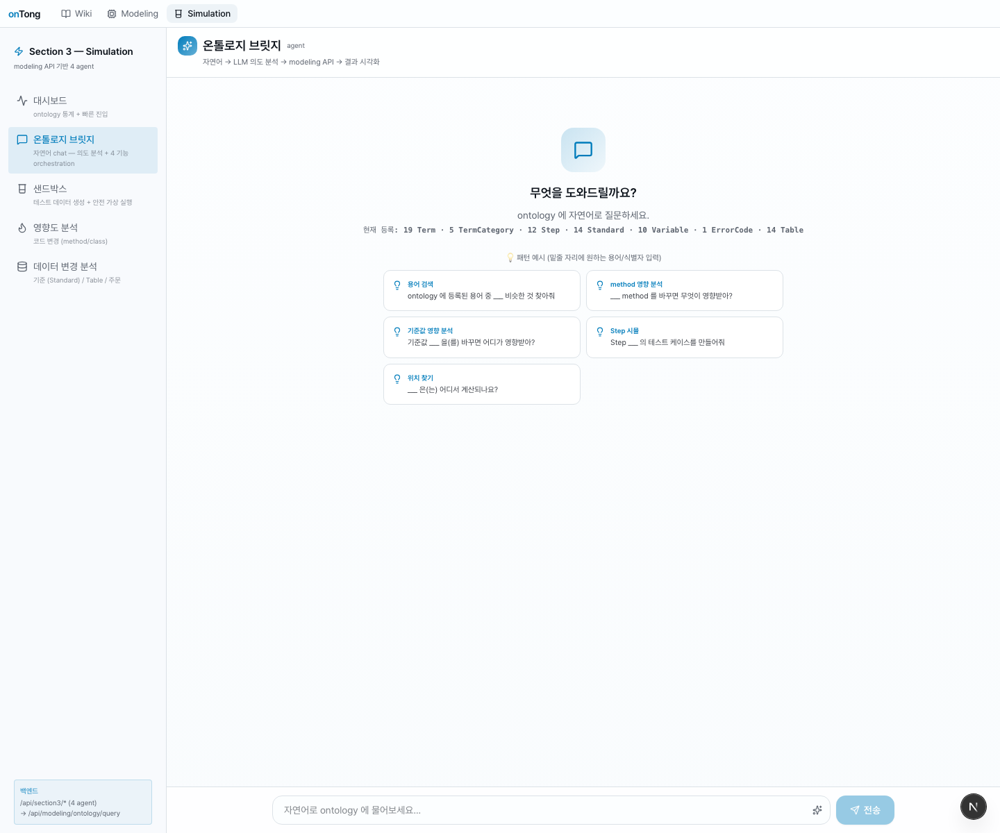
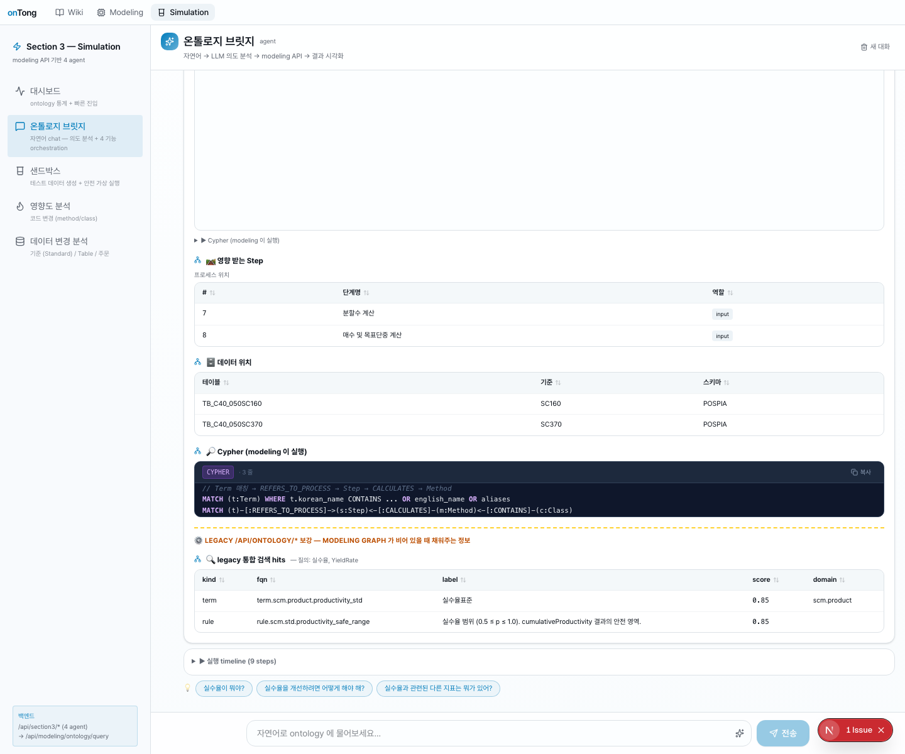
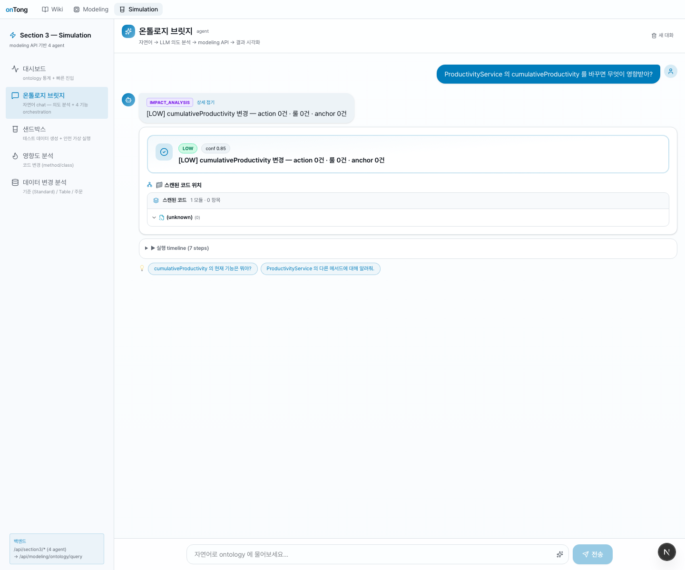
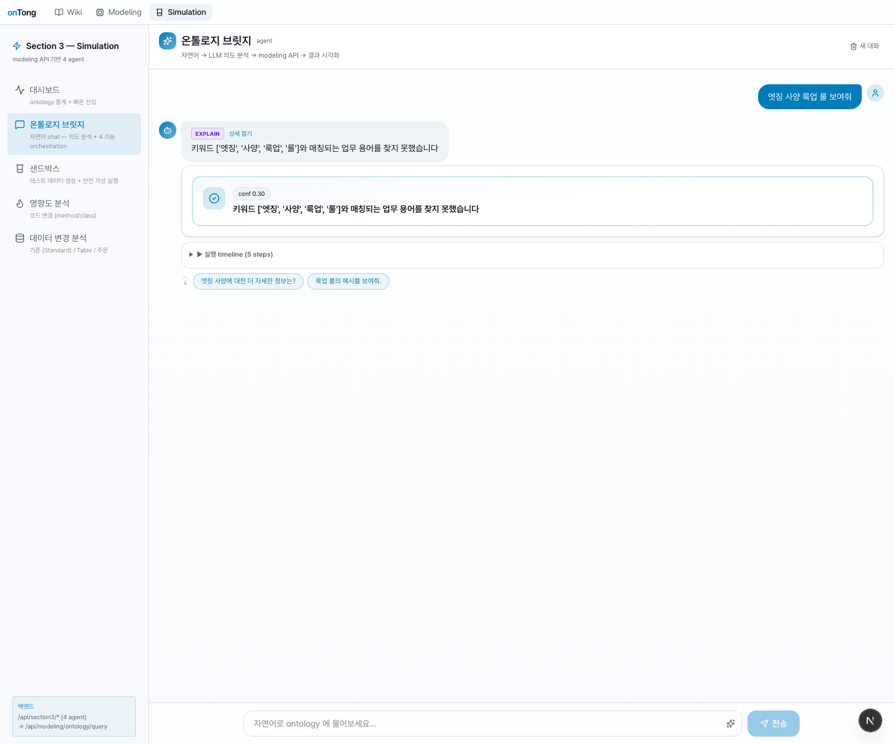
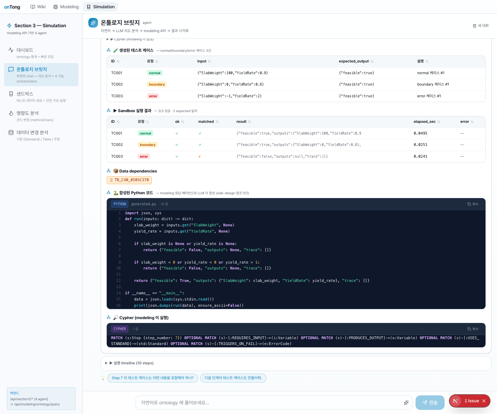
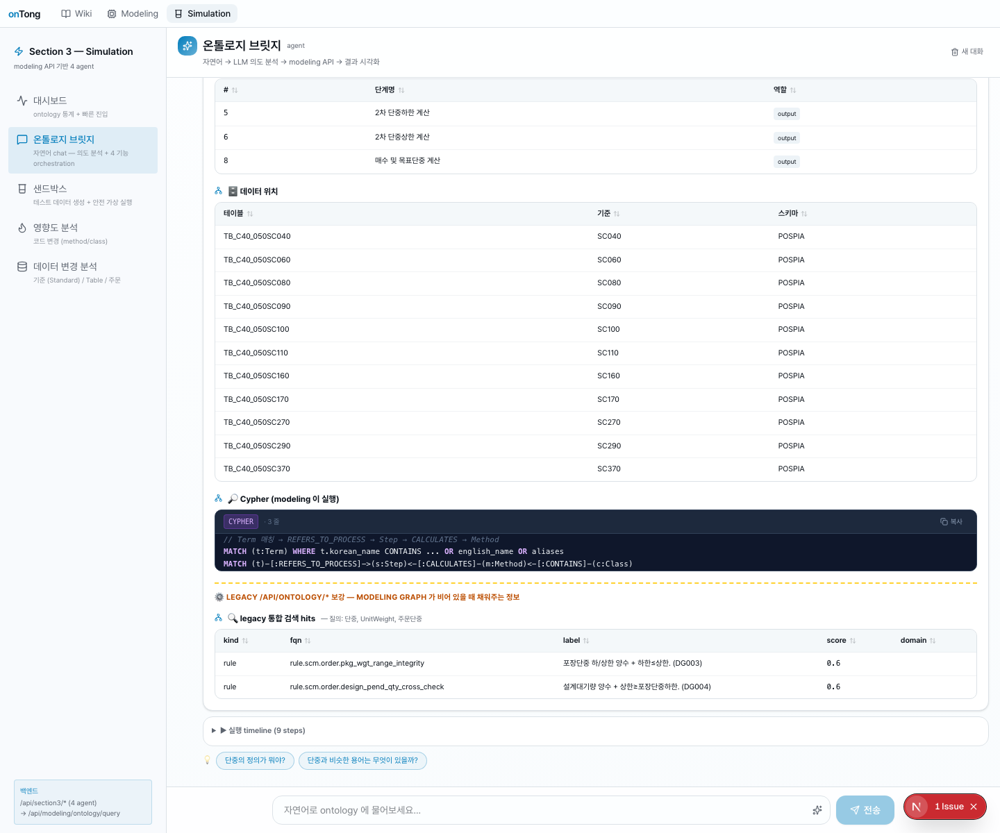
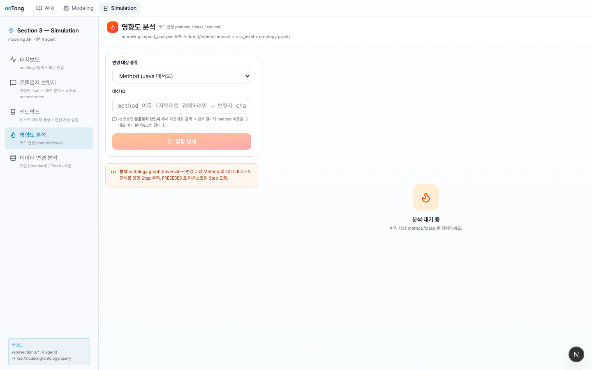
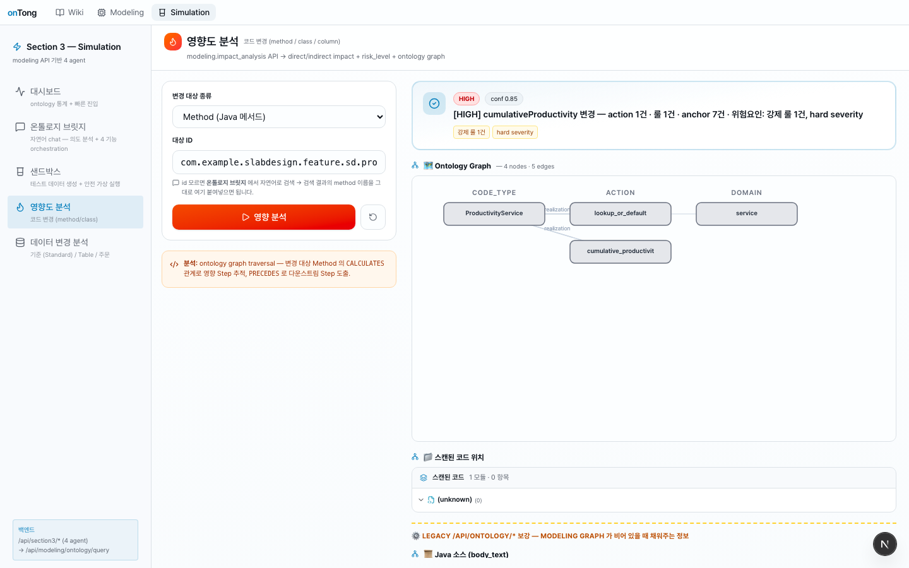

onTong · Section 3 — Simulation
1 · 핵심 파이프라인
사용자 발화 / fqn 입력
↓
[1] OntologyComposer legacy /api/ontology/* 실시간 호출 (병렬 7종)
├─ actions/{fqn} params · output · realizations
├─ code-methods/{fqn}/call-sites 호출 그래프
├─ code-methods/{fqn}/anchor-bindings literal · guard line
├─ code-types/{class_fqn} methods.body_text · fields
├─ business-rules?repo_id= enforced_by 매칭
├─ modules/inventory/actions method ↔ action 인덱스
└─ repos/{repo_id}/graph?mode=neighborhood 시각화 trace
↓
[2] JavaToPython AST tree-sitter-java → Python source
null → None · &&/|| → and/or · BigDecimal → Decimal
length()/charAt(i) → len()/s[i]
for(int i=0;i<N;++i) → for i in range(0, N)
↓
[3] Sandbox subprocess JSON stdin → run() 호출 → stdout JSON result
↓
UI : SSE 스트리밍 — thinking · layer_scan(영향 메서드, 룰, anchor, …) · final
2 · 대시보드 — graph_stats 즉시 노출

3 · 온톨로지 브릿지 (자연어 chat) — 핵심 메뉴
Section 3 의 가장 풍부한 메뉴. 자연어 입력 → LLM 의도 분류 (impact_analysis / simulate / explain) → composer 가 legacy API 다종 병렬 호출 → SSE 스트리밍으로 단계별 표시 → 최종 답변에 RichResultCard 부착.
3.1 빈 시작 화면 — 추천 prompt 5종

| 카드 라벨 | 템플릿 (밑줄 자리에 용어/식별자 입력) |
|---|---|
| 용어 검색 | ontology 에 등록된 용어 중 ___ 비슷한 것 찾아줘 |
| method 영향 분석 | ___ method 를 바꾸면 무엇이 영향받아? |
| 기준값 영향 분석 | 기준값 ___ 을(를) 바꾸면 어디가 영향받아? |
| Step 시뮬 | Step ___ 의 테스트 케이스를 만들어줘 |
| 위치 찾기 | ___ 은(는) 어디서 계산되나요? |
placeholder: 자연어로 ontology 에 물어보세요... · 통계 한 줄: 19 Term · 5 TermCategory · 12 Step · 14 Standard · 10 Variable · 1 ErrorCode · 14 Table
3.2 시연 ① — "실수율이 어디서 계산되나?"
LLM 분류 → explain intent. modeling explain + legacy search cross-query 보강.

SSE 스트리밍 단계 (9 events)
1. thinking "의도 분석 중 — '실수율이 어디서 계산되나?'"
2. intent_classification {modeling_intent: "explain", confidence: 0.9}
3. modeling_call intent=explain, natural_language=원본
4. modeling_result matched_terms 1건 · Step 2건 · Table 2건
5. layer_scan "프로세스 (Step)" → 2 items
6. layer_scan "데이터 (Table)" → 2 items
7. layer_scan "매칭 용어 (Term)" → 1 item
8. layer_scan "legacy 검색 — 코드/액션 후보" → 2 hits (composer 한↔영 cross-query 보강)
9. final summary + visualization (cypher)
캡처에 보이는 답변 영역
| 영역 | 내용 | ||||||||||||
|---|---|---|---|---|---|---|---|---|---|---|---|---|---|
| 영향 받는 Step | Step 7 분할수 계산 (input) · Step 8 매수 및 목표단중 계산 (input) | ||||||||||||
| 데이터 위치 | TB_C40_050SC160 (SC160, POSPIA) · TB_C40_050SC370 (SC370, POSPIA) | ||||||||||||
| Cypher | // Term 매핑 → REFERS_TO_PROCESS → Step → CALCULATES → Method MATCH (t:Term) WHERE t.korean_name CONTAINS … OR english_name OR aliases MATCH (t)-[:REFERS_TO_PROCESS]->(s:Step)-[:CALCULATES]-(m:Method)←[:CONTAINS]-(c:Class) | ||||||||||||
| LEGACY 보강 hits |
| ||||||||||||
| suggested follow-ups | 3 chip: 실수율이 뭐야? · 실수율을 개선하려면 어떻게 해야 해? · 실수율과 관련된 다른 지표는 뭐가 있어? |
실수율 term 은 찾지만, 그 term 의 연관 rule 까지 못 가져온다. composer 가 영문 alias YieldRate 로 재검색하여 rule.scm.std.productivity_safe_range 까지 보강 — 정보량 2배.3.3 시연 ② — "ProductivityService 의 cumulativeProductivity 를 바꾸면 무엇이 영향받아?"

conf 0.85답변:
[LOW] cumulativeProductivity 변경 — action 0건 · 룰 0건 · anchor 0건- 스캔된 코드 위치 1 모듈
- 실행 timeline 7 steps
- follow-ups:
cumulativeProductivity 의 현재 기능은 뭐야?·ProductivityService 의 다른 메서드에 대해 알려줘
3.4 시연 ③ — "엣징 사양 룩업 룰 보여줘" (한국어 매칭 한계)

답변:
키워드 ['엣징', '사양', '룩업', '룰']와 매칭되는 업무 용어를 찾지 못했습니다- 실행 timeline 5 steps
- follow-ups:
엣징 사양에 대한 더 자세한 정보는?·룩업 룰의 예시를 보여줘.
term.scm.spec.edging_spec · rule.scm.spec.edging_spec_lookup_strategy 가 분명히 존재. modeling 의 explain keyword matcher 와 legacy search 가 모두 한국어 엣징 ↔ 영문 edging cross-match 못함. SECTION2_REQUEST_ESSENTIAL.md 필수 1번의 정확한 evidence 가 이 캡처.3.5 시연 ④ — "Step 7 의 테스트 케이스를 만들어줘"

답변에 표시되는 영역:
| 영역 | 내용 |
|---|---|
| 생성된 테스트 케이스 3건 | normal/boundary/error · input · expected_output 표 |
| Sandbox 실행 결과 | 3 case 모두 ok=true · matched · elapsed_sec |
| Data dependencies | chip TB_C40_050SC370 |
| 합성된 Python 코드 | LLM 이 modeling 응답 메타만으로 합성 (slab-design 참조 0) |
| Cypher | MATCH (s:Step {step_number: $sid}) OPTIONAL MATCH (s)-[:REQUIRES_INPUT]->(v:Variable) … |
※ Step kind 는 modeling /query 가 정확한 응답을 주므로 composer 가 modeling 으로 위임 (composer 는 method/class/action 만 자체 합성).
3.6 시연 ⑤ — "ontology 에 등록된 용어 중 단중 비슷한 것 찾아줘"

답변 (스크롤 후):
- 프로세스 위치 — Step 5 · 6 · 8 (모두
output역할). 즉 "단중" 이라는 용어가 정의되는 Step 들 - 데이터 위치 (11 테이블):
TB_C40_050SC040 ~ TB_C40_050SC370· 각각 매핑된 SC 코드 - Cypher · LEGACY 통합 검색 hits (rule 2건 — DG003 포장단중 적치상한, DG004 설계지연 평가)
- follow-ups:
단중을 합치는 뭐야?·단중과 비슷한 용어는 무엇이 있어요?
단중 으로 → 3 Step + 11 Table + 2 BR 까지 한 호출로 매칭. composer 의 다종 endpoint 병렬 합성 효과.4 · 샌드박스 — composer + AST + subprocess

ProductivityService.cumulativeProductivity 메서드 시뮬
result = 0.95 (Java 로직 그대로). 우측 하단에 transpiled Python 코드 표시.composer 가 code-types 에서 body_text 가져오고, code-methods/{fqn}/anchor-bindings 의 anchor_locator: "DEFAULT_PRODUCTIVITY = 0.95" 에서 field initializer 추출하여 transpile prelude 에 prepend:
from decimal import Decimal
DEFAULT_PRODUCTIVITY = 0.95 # ← anchor_locator 에서 추출
def cumulativeProductivity(cmpCd, orgCd, confirmedPlantCd, gradeCd, prodKindCd, customerCd):
if (confirmedPlantCd == None or len(confirmedPlantCd) < 8):
return DEFAULT_PRODUCTIVITY
...
5 · 영향도 분석 — 코드 변경

cumulativeProductivity FQN 직접 입력 (chat 분기보다 정확)
6 · 데이터 변경 분석

business-rules.statement · anchor-bindings.target_slot 매칭 + 통합 검색까지 한 호출 합성. modeling 의 impact_analysis(standard_value) 분기 버그 우회.
7 · 백엔드 SSE 시퀀스 (method kind 기준)
POST /api/section3/code-impact
{ target_kind:"method", target_id:"...cumulativeProductivity(...)" }
├─ thinking "코드 영향도 — method=..."
├─ modeling_call "composer.impact_analysis"
├─ [composer] 병렬 fetch (5 endpoints)
│ ├─ GET /api/ontology/code-types/{class_fqn}
│ ├─ GET /api/ontology/code-methods/{fqn}/anchor-bindings
│ ├─ GET /api/ontology/code-methods/{fqn}/call-sites
│ ├─ GET /api/ontology/business-rules?repo_id=slab-design-real
│ └─ GET /api/ontology/repos/slab-design-real/modules/inventory/actions
├─ modeling_result (composer 합성 응답)
├─ layer_scan "영향 메서드" (1 item)
├─ layer_scan "비즈니스 룰" (1 item — productivity_safe_range)
├─ layer_scan "anchor (라인 매핑)" (7 items)
├─ layer_scan "call-sites" (1 item)
├─ layer_scan "owning actions" (1 item — cumulative_productivity)
└─ final {risk: HIGH, summary, legacy_enrich, visualization}
8 · Section 2 (Modeling) 에 정말 필요한 3건
| # | 우선순위 | 제목 | 목적 / 막힘 정도 | Section 3 활용처 |
|---|---|---|---|---|
| 1 | 🔴 필수 | search 한국어 / aliases / 한↔영 매칭 |
"엣징", "주문", "단중" 등 한국어 검색 0 hit. chat UX 정보량 절반. (§3.4 evidence) | BridgeChatPanel · CodeImpactPanel · DataImpactPanel 자동완성 |
| 2 | 🔴 필수 | action.output 55%→90%+ backfill |
38 action 중 21 (55%) 이 output:null. sandbox 의 expected_output 검증 불가 | SandboxPanel 결과 일치 표시 |
| 3 | 🟡 권장 | repos/.../graph default mode 명시 + include_kinds 동작 검증 |
default 가 60 nodes 라 UI 무거움 | OntologyGraphSVG 시각화 |
기존 7건은 모두 Section 3 단독 우회 완료 — Section 2 변경 ❌ 없이 동작.
9 · 작업 통계
10 · 작업 진행 과정 — ontology API 응답을 기반으로 한 단계별 의사결정
처음부터 composer + AST 가 있었던 것이 아닙니다. 각 단계마다 API 응답을 직접 보고 다음 결정을 했고, 그래서 단계가 9개로 나뉩니다.
Phase 1 — 초기 구조 (modeling /query 단독 의존)
처음에는 4 agent (bridge / sandbox / code-impact / data-impact) 가 전부 modeling 한 endpoint 만 호출:
agent → POST /api/modeling/ontology/query { intent, parameters: {target: {kind, id}} }
← OntologyResponse { result: { ... } }
Phase 2 — 첫 진단 (graph_stats 호출로 빈 그래프 발견)
진단 1순위로 /api/modeling/ontology/graph/stats →
{ "nodes": { "Term":19, "Step":12, "Standard":14, "Table":14,
"Class":0, "Method":0 }, // ★ 코드 노드 0
"totals": { "nodes":75, "relations":117 } }
이어서 impact_analysis(method=…) 호출 → "... 에 해당하는 메서드가 그래프에 없습니다". cypher 는 정상인데 (m:Method) 매치가 0건. layer3_code 미적재.
Phase 3 — Ontology API 1차 전수 호출 (94 raw 응답)
대안 데이터 소스를 찾아 /api/ontology/* 전수 호출. 발견 요약:
| endpoint | 응답 풍부도 |
|---|---|
/api/ontology/terms | 1236 term (modeling 의 19 에 비해 65배) |
/api/ontology/actions | 1514 action + realizations[].code_method_fqn 매핑 포함 |
/api/ontology/code-types | 5166 class — 각 methods[].body_text (실 Java 소스) |
/api/ontology/business-rules | enforced_by + operational_history (P-2018-0237 등) |
/api/ontology/anchor-bindings | "DEFAULT_PRODUCTIVITY = 0.95" 같은 라인 단위 literal |
code-methods/{fqn}/call-sites | confidence + needs_user_confirm |
결정: modeling /query 응답에 legacy 보강 layer 추가. ModelingClient 에 11 endpoint wrapper.
Phase 4 — 보강 PoC + 사용자 추가 지적 (큰 방향 전환)
ModelingClient + _enrich_with_legacy() 추가. code-impact 가 빈 응답이라도 legacy 에서 body_text · rule · anchor 보강.
→ "modeling /query 가 메인 + legacy 가 보조" 가 아닌, "legacy 가 메인, modeling /query 는 step kind 만 fallback" 으로 구조 자체 전환 결정.
Phase 5 — Ontology API 2차 보강 호출 (33 응답 추가)
사용자 지적: "모든 온톨로지가 제공하는 api 를 호출만 딱 하고, 호출된 것들의 응답을 철저히 분석해서 진행해." 1차 누락 endpoint 추가 호출 → 결정적 발견 4가지:
| 발견 | 영향 |
|---|---|
★ repos/{repo_id}/graph?mode=neighborhood&focus_fqn=…&hops=2 | modeling ontology_trace 가 빈 응답이라도 시각화 자립 가능 |
★★ repos/{repo_id}/modules/inventory/actions | method ↔ action 1:1 매핑 36/36 = 100% — modeling Class/Method=0 우회 완전 |
★ POST recommend?persist=false | modeling builder 입력을 read-only 로 직접 — 적재 단계 자체 우회 |
search?q=실수율 0 hit / search?q=productivity OK | 한국어 매칭 약함 evidence — Section 2 요청 #1 근거 |
code-types?role=service 400 error | role enum = {framework, domain, infra} 3개 뿐 |
결론: legacy 만으로 modeling 과 동등 응답 합성 가능. Section 3 단독 자립 길 확정.
Phase 6 — OntologyComposer 설계 + 구현
backend/section3/composer.py 신설 — modeling /query 응답과 동등 shape 반환:
class OntologyComposer:
impact_analysis(target_kind, target_id)
├─ _impact_method — code-types + anchor-bindings + call-sites + business-rules + modules/inventory/actions 병렬
├─ _impact_class — code-types.methods + modules/inventory/actions + business-rules
├─ _impact_action — actions/{fqn} + anchor-bindings + delegates-to-tree + business-rules
└─ _impact_data — business-rules + anchor-bindings + search (statement 매칭)
simulate(target_kind, target_id)
├─ _simulate_action — params + 첫 realization 의 body_text + class.fields + method anchors
├─ _simulate_method — code-types + method anchors
└─ _simulate_class — public methods × per-method cases
explain(natural_language)
├─ legacy /search 1차 hit
└─ list_terms + in-memory korean fuzzy fallback
Phase 7 — JavaToPython AST transpiler 추가 (사용자 명시 요구)
backend/section3/transpiler.py 신설. tree-sitter-java 사용. body_text → AST → Python source.
복병 발견: legacy code-types.fields 가 name/type 만 노출, initializer 텍스트는 노출 안 함. 그러나 Phase 5 에서 호출했던 anchor-bindings 의 anchor_locator: "DEFAULT_PRODUCTIVITY = 0.95" 가 답. regex ^([A-Z_]+)\s*=\s*(.+)$ 로 추출 → module-level prelude 에 prepend.
Phase 8 — agents 전환 + UI 보강 + end-to-end 검증
agents/sandbox_agent.py→composer.simulate→transpiler.transpile→run_python_multiagents/code_impact_agent.py→composer.impact_analysisagents/data_impact_agent.py→composer.impact_analysisagents/bridge_agent.py→ explain 분기 legacy search enrich (한국어→영문 cross-query)frontend/.../api.ts→LegacyEnrich타입frontend/.../RichResultCard.tsx→ legacy 보강 섹션 UI
최종 검증 — cumulativeProductivity("ABC") 입력 → composer 5 endpoint 병렬 → tree-sitter-java AST → Python source 1447b (warnings: []) → subprocess {"ok": true, "result": 0.95} ✓
Phase 9 — Section 2 요청 정리 (7건 → 3건)
| 기존 요청 | composer 도입 후 상태 |
|---|---|
| #02 id 카탈로그 (table/standard/order) | legacy terms + modules/inventory(/actions) 로 대체 ✓ |
| #03 modeling graph 에 Class/Method 적재 | repos/.../graph?mode=neighborhood + modules/inventory/actions 로 우회 ✓ |
| #04 impact_analysis standard_value 분기 버그 | composer 가 자체 합성 ✓ |
| #05 simulate method/class/order 지원 | composer + transpiler 가 자체 합성 ✓ |
#06 explain keywords[] 배열 수용 | bridge_agent 가 natural_language 만 전송 ✓ |
| #07 modeling term/search alias 강화 | composer 가 legacy search + in-memory fuzzy fallback ✓ |
→ 모두 보류 (Section 3 단독 우회 완료). 진짜 필수만 추려 §8 의 3건만 남김.